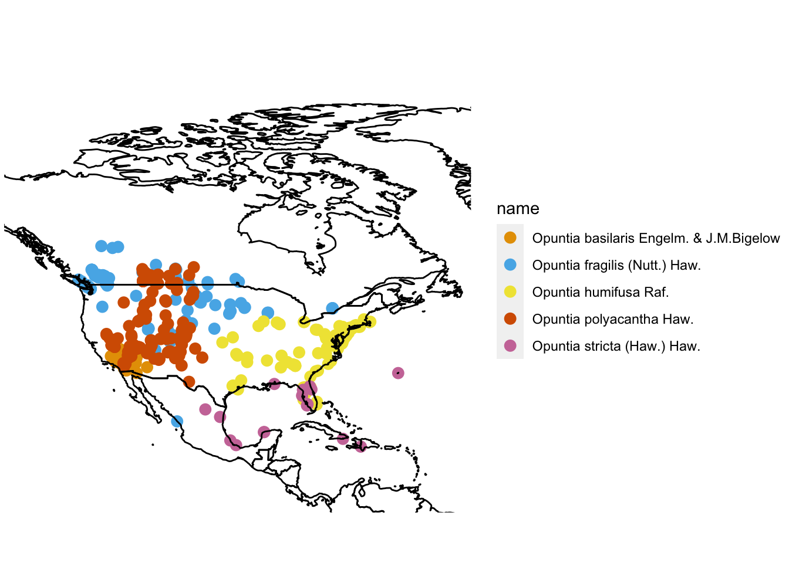

At its core, plant taxonomy is the science of naming and grouping plants based on their shared traits. Throughout this course we’ve seen how growth habit, morphology, and geographic distribution can provide valuable information about how to classify and define plants. When we consider geographic information, we are asking questions like “do the plants occupy similar or distinct habitats?” and “are the ranges of these plants disjunct or overlapping?”. Depending on the answer to these questions, our decision to group or separate plants (and give them different names) can be changed dramatically. In this R activity, we’ll demonstrate how we can use publically available occurence data to create distribution maps for plants and use these maps to make taxonomic decisions.
Before starting this week’s lab you will have:
Completed R Assignment 1 (Lab 6) and the pre-readings assigned there.
Insert GBIF video tutorial here? Or have them do it in unit 1 (note: GBIF intro material lives as comments in Lab 6).
Read Chapter 2 up to section 2.3.1 in Modern Dive. Make sure you are able to produce Figures 2.2 and 2.3 on your own (using the code provided in the textbook). If your R is giving errors while trying to make these figures, please reach out to the TAs to fix them — it won’t be possible to finish this lab without the ggplot2 package working correctly.
Selected your favourite plant group for creating a species distribution map (not sure if we’re doing this)
By the end of this tutorial you will have:
experience manipulating and mapping species distribution data in R,
familiarity with GBIF and the types of data that can be obtained,
More?
In previous labs we familiarized ourselves with GBIF, R, and RStudio. Today we’ll be running a script that collects, filters, and maps distribution data for two species of “prickly pear” cacti Opuntia fragilis Nutt. Haw. and Opuntia humifusa Raf. (Opuntioideae: Cactaceae).
First let’s install the required packages:
These packages are designed for connecting with the GBIF database (rgbif, spocc, taxize), filtering data (tidyverse), and mapping (mapr). Once installed, use the library() function to attach the packages (we’ll also attach tidyverse to help with data wrangling and plotting):
Now let’s get some occurence data from GBIF!
opuntia_ids <-
taxize::get_gbifid(
sci=c("Opuntia basilaris Engelm. & J.M.Bigelow",
"Opuntia fragilis (Nutt.) Haw.",
"Opuntia humifusa Raf.",
"Opuntia polyacantha Haw.",
"Opuntia stricta (Haw.) Haw."),
rank='species',
rows = 1)## == 5 queries ===============##
## Retrieving data for taxon 'Opuntia basilaris Engelm. & J.M.Bigelow'## v Found: Opuntia basilaris Engelm. & J.M.Bigelow##
## Retrieving data for taxon 'Opuntia fragilis (Nutt.) Haw.'## v Found: Opuntia fragilis (Nutt.) Haw.##
## Retrieving data for taxon 'Opuntia humifusa Raf.'## v Found: Opuntia humifusa Raf.##
## Retrieving data for taxon 'Opuntia polyacantha Haw.'## v Found: Opuntia polyacantha Haw.##
## Retrieving data for taxon 'Opuntia stricta (Haw.) Haw.'## v Found: Opuntia stricta (Haw.) Haw.
## == Results =================
##
## * Total: 5
## * Found: 5
## * Not Found: 0The get_gbifid() function searches GBIF for taxon IDs associated with your search query. We wrote the code as taxize::get_gbifid() to be clear about which package the function originated from (taxize), but this isn’t usually necessary. The <- operator stores the results in an object that we named opuntia_ids. By storing the results in an object we can later return to the object and inspect it, subset it, and pipe it to other functions. The output message is telling us that the get_gbif() function found 1 taxon ID for each Opuntia species. This is ideal because it means that there aren’t any synonyms to deal with! To find out what the taxon ID for the first species (O. basilaris), we’ll look inside our opuntia_ids object for the first element:
## [1] "5384070"The output tells us that the taxon ID for O. basilaris is "5384070". Now, let’s use our ‘taxon ID object’ to download occurence data directly from GBIF (this can take a minute depending on how many records there are for a taxon):
In this code we’ve created a new object called opuntia_metadata. This object contains occurence records found by the occ() function, where we specified our taxon ID (contained in opuntia_ids) and told the function that we wanted our data from = gbif (instead of another database) and that we wanted a maximum of 1000 records. Let’s inspect the structure of the opuntia_metadata object:
## List of 9
## $ gbif :List of 2
## ..- attr(*, "class")= chr "occdatind"
## $ bison :List of 2
## ..- attr(*, "class")= chr "occdatind"
## $ inat :List of 2
## ..- attr(*, "class")= chr "occdatind"
## $ ebird :List of 2
## ..- attr(*, "class")= chr "occdatind"
## $ ecoengine:List of 2
## ..- attr(*, "class")= chr "occdatind"
## $ vertnet :List of 2
## ..- attr(*, "class")= chr "occdatind"
## $ idigbio :List of 2
## ..- attr(*, "class")= chr "occdatind"
## $ obis :List of 2
## ..- attr(*, "class")= chr "occdatind"
## $ ala :List of 2
## ..- attr(*, "class")= chr "occdatind"
## - attr(*, "class")= chr "occdat"
## - attr(*, "searched")= chr "gbif"The output tells us that opuntia_metadata is a List object with 9 named elements. We are specifically interested in the named element $gbif, so we can simplify our object by subsetting:
While writing this code, we discovered that the opuntia_metadata object is pretty complex and with lots of layers! The code above says to take the large object opuntia_metadata and select the element named $gbif. Then, within the element $gbif, select the sub-element $data. Within $data there are 5 elements, each one contains the lat-long information for one of our Opuntia species.
Let’s look at the lat-long data for O. basilaris:
## # A tibble: 1,000 x 75
## name longitude latitude issues prov key scientificName datasetKey
## <chr> <dbl> <dbl> <chr> <chr> <chr> <chr> <chr>
## 1 Opun~ -117. 36.9 cdrou~ gbif 2549~ Opuntia basil~ 50c9509d-~
## 2 Opun~ -116. 34.1 cdrou~ gbif 2550~ Opuntia basil~ 50c9509d-~
## 3 Opun~ -117. 36.9 cdrou~ gbif 2550~ Opuntia basil~ 50c9509d-~
## 4 Opun~ -114. 32.2 cdrou~ gbif 2550~ Opuntia basil~ 50c9509d-~
## 5 Opun~ -117. 36.9 cdrou~ gbif 2550~ Opuntia basil~ 50c9509d-~
## 6 Opun~ -116. 33.7 cdrou~ gbif 2550~ Opuntia basil~ 50c9509d-~
## 7 Opun~ -116. 33.7 cdrou~ gbif 2550~ Opuntia basil~ 50c9509d-~
## 8 Opun~ -117. 36.9 cdrou~ gbif 2550~ Opuntia basil~ 50c9509d-~
## 9 Opun~ -116. 33.8 cdrou~ gbif 2550~ Opuntia basil~ 50c9509d-~
## 10 Opun~ -116. 33.8 cdrou~ gbif 2557~ Opuntia basil~ 50c9509d-~
## # ... with 990 more rows, and 67 more variables: publishingOrgKey <chr>,
## # installationKey <chr>, publishingCountry <chr>, protocol <chr>,
## # lastCrawled <chr>, lastParsed <chr>, crawlId <int>, basisOfRecord <chr>,
## # taxonKey <int>, kingdomKey <int>, phylumKey <int>, classKey <int>,
## # orderKey <int>, familyKey <int>, genusKey <int>, speciesKey <int>,
## # acceptedTaxonKey <int>, acceptedScientificName <chr>, kingdom <chr>,
## # phylum <chr>, order <chr>, family <chr>, genus <chr>, species <chr>,
## # genericName <chr>, specificEpithet <chr>, taxonRank <chr>,
## # taxonomicStatus <chr>, dateIdentified <chr>,
## # coordinateUncertaintyInMeters <dbl>, stateProvince <chr>, year <int>,
## # month <int>, day <int>, eventDate <date>, modified <chr>,
## # lastInterpreted <chr>, references <chr>, license <chr>,
## # geodeticDatum <chr>, class <chr>, countryCode <chr>, recordedByIDs <list>,
## # identifiedByIDs <list>, country <chr>, rightsHolder <chr>,
## # identifier <chr>, `http://unknown.org/nick` <chr>, verbatimEventDate <chr>,
## # datasetName <chr>, verbatimLocality <chr>, gbifID <chr>,
## # collectionCode <chr>, occurrenceID <chr>, taxonID <chr>,
## # catalogNumber <chr>, recordedBy <chr>,
## # `http://unknown.org/occurrenceDetails` <chr>, institutionCode <chr>,
## # rights <chr>, eventTime <chr>, identifiedBy <chr>, identificationID <chr>,
## # occurrenceRemarks <chr>, infraspecificEpithet <chr>,
## # informationWithheld <chr>, identificationRemarks <chr>The output is pretty big and messy! The output tells us that it’s a tibble (a type of spreadsheet) with 1000 rows and 75 columns. Each row is a record of where Opuntia basilaris has been found or collected. Each column is some information associated with that record. While some of the columns are useful (e.g. the latitude and longitude), most columns aren’t needed (we’ll get rid of them later). In the next step, we’ll combine the five separate tibbles into one:
opuntia_combined <-
full_join(opuntia_simple$`5384070`[, c(1:3, 7, 16, 50, 53)], opuntia_simple$`5384113`[, c(1:3, 7, 16, 53)]) %>%
full_join(., opuntia_simple$`5384047`[, c(1:3, 7, 16, 50, 53)]) %>%
full_join(., opuntia_simple$`5384095`[, c(1:3, 7, 16, 50, 53)]) %>%
full_join(., opuntia_simple$`5384075`[, c(1:3, 7, 16, 50, 53)])Above, we used the full_join() function to merge the data. We specified that we only wanted to keep certain columns (columns 1:3, 7, 16, 50, 53). Everything else was discarded. Whew! This is a lot of organizing.. we’re almost there. Before we get to mapping, we should check our data for synonyms. The unique() function tells us how many unique entries exist within a column:
## [1] "Opuntia basilaris Engelm. & J.M.Bigelow"
## [2] "Opuntia basilaris var. basilaris"
## [3] "Opuntia basilaris var. brachyclada Munz"
## [4] "Opuntia basilaris var. treleasei (J.M.Coult.) Toumey"
## [5] "Opuntia fragilis (Nutt.) Haw."
## [6] "Opuntia fragilis var. fragilis"
## [7] "Opuntia fragilis var. brachyarthra (Engelm. & J.M.Bigelow) J.M.Coult."
## [8] "Opuntia humifusa Raf."
## [9] "Opuntia austrina Small"
## [10] "Opuntia mesacantha Raf."
## [11] "Opuntia ammophila Small"
## [12] "Opuntia humifusa var. humifusa"
## [13] "Opuntia polyacantha var. erinacea (Engelm. & J.M.Bigelow) B.D.Parfitt"
## [14] "Opuntia polyacantha Haw."
## [15] "Opuntia arenaria Engelm."
## [16] "Opuntia polyacantha var. polyacantha"
## [17] "Opuntia polyacantha var. juniperina (Britton & Rose) L.D.Benson"
## [18] "Opuntia polyacantha var. hystricina (Engelm. & J.M.Bigelow) B.D.Parfitt"
## [19] "Opuntia trichophora (Engelm. & J.M.Bigelow) Britton & Rose"
## [20] "Opuntia dillenii (Ker Gawl.) Haw."
## [21] "Opuntia stricta (Haw.) Haw."
## [22] "Opuntia stricta subsp. stricta"
## [23] "Opuntia bentonii Griffiths"
## [24] "Opuntia anahuacensis Griffiths"
## [25] "Opuntia tunoidea Gibbes"
## [26] "Opuntia stricta var. dillenii L.D.Benson"
## [27] "Opuntia stricta var. stricta"Unfortunately, lots of synonyms were included in the results. We’ll make a object containing the names we want to keep, and use the filter() function to get rid of everything else:
opuntia_accepted <- c(
"Opuntia basilaris Engelm. & J.M.Bigelow",
"Opuntia fragilis (Nutt.) Haw.",
"Opuntia humifusa Raf.",
"Opuntia polyacantha Haw.",
"Opuntia stricta (Haw.) Haw.")
# filter out synonyms
# filter out entries outside of North America
opuntia_fil<-
opuntia_combined %>%
filter(scientificName == opuntia_accepted) %>%
filter(longitude < -58 & latitude > 18.1) %>%
filter(basisOfRecord == "HUMAN_OBSERVATION")We’re ready to map! Pick some colours for your species (you can pick your own from here):
And map using the map_ggplot() function:
mapr::map_ggplot(opuntia_fil[,1:3], color = mycolors) +
coord_fixed(xlim = c(-135, -55 ), ylim = c(10, 90)) 
Beauty! After all of that hard work, we’ll save the lat-long data object as an .rds file. We’ll use this data again in Lab 10. If you downloaded or forked the BIOL324 folder from the GitHub site, you can run this code:
MB: Not sure if we’re going this route.. let’s discuss!
MB: Basically, the existing code can be modified to replace Opuntia with any other plant name. Re-running the code will create a map for any species that GBIF has records for. Of course, some taxa are have more complicated nomenclature, and sometimes weird entries make it onto the map. In these cases, a little troubleshooting is required. Also, if one wanted to search for genera, families, orders, etc. some additional modifications are needed. For the majority of students in BIOL413, generating their own maps didn’t require my intervention.